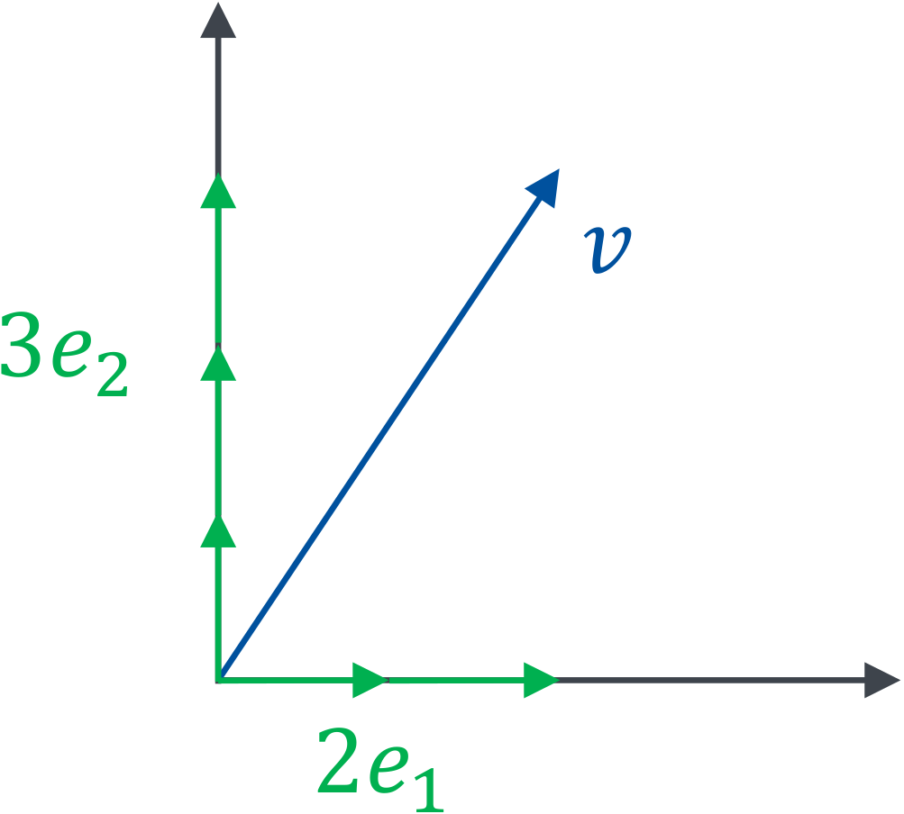
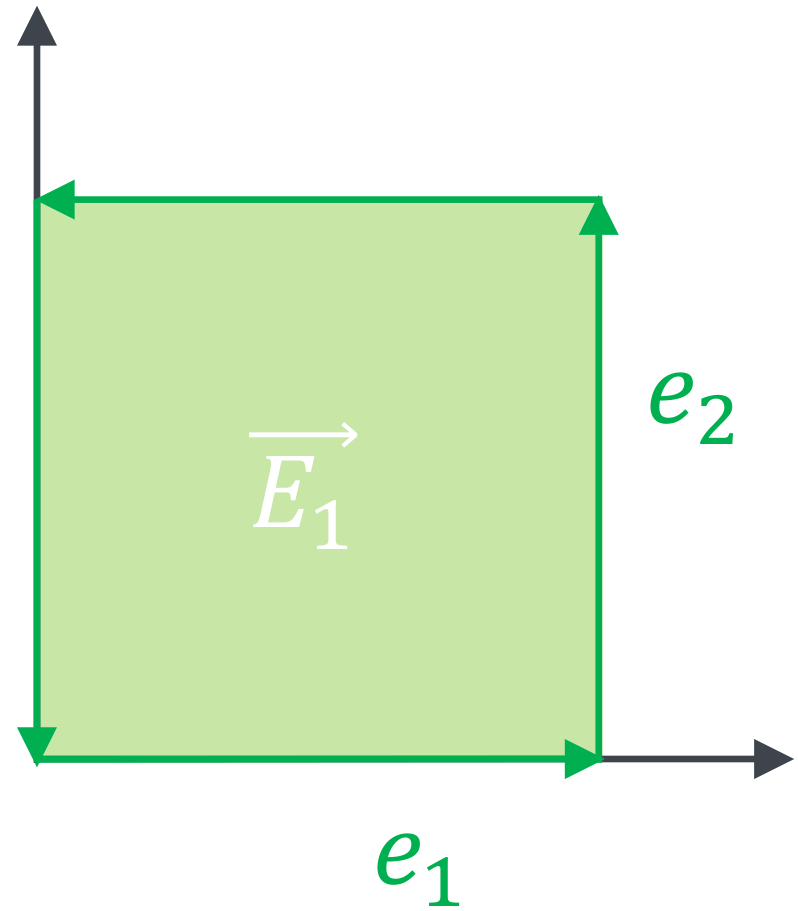
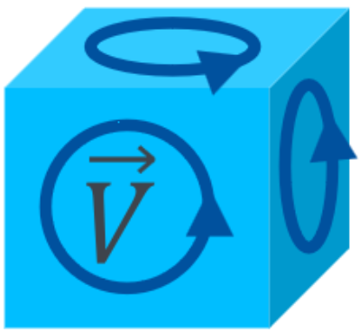
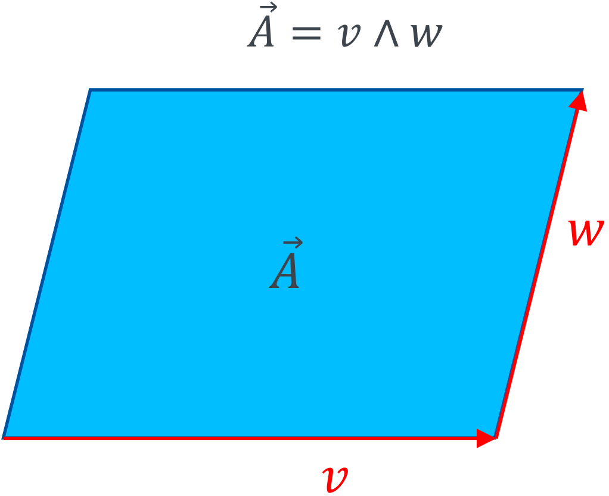
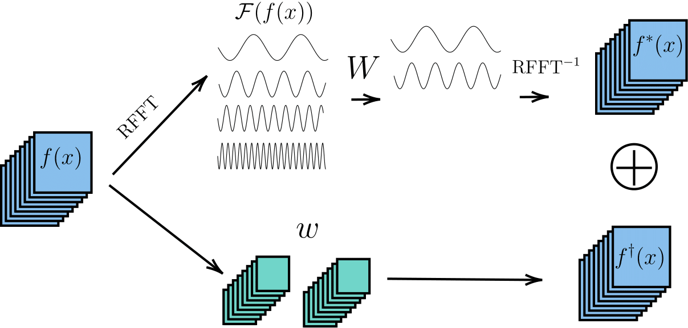
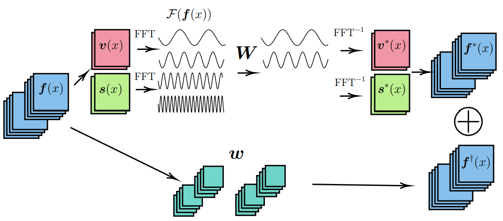
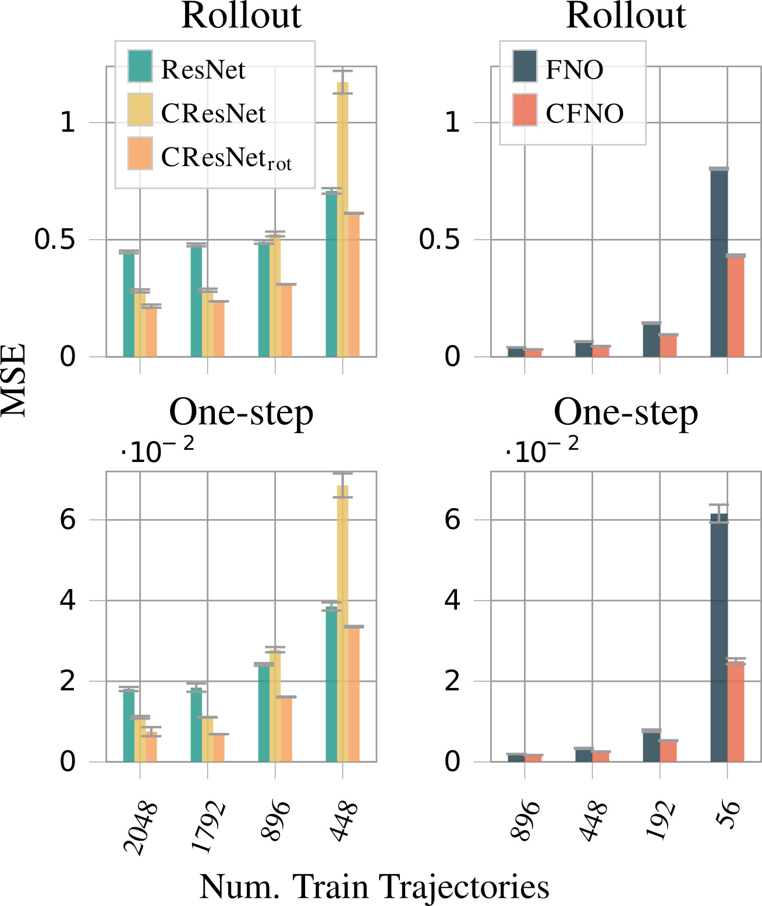
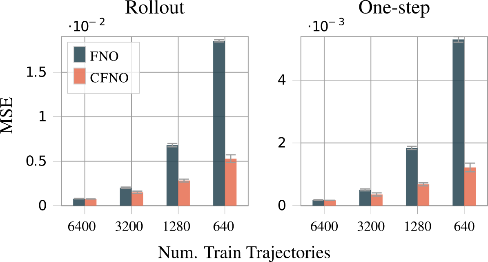

Introduction
Welcome to my blog post summarising and explaining the paper ‘Clifford Neural Layers for PDE Modeling’ published at ICLR 2023. Brandstetter et al. introduce new types of neural network layers based on the mathematical concept of Clifford algebras. These layers are able to model Partial Differential Equations (PDEs) better than current variants. As a student of Simulation Technology, I am very interested in the interplay of deep learning and numerical methods. This paper is a great example of how mathematical concepts can be used to improve deep learning methods by infusing knowledge about the underlying physics.
This post is also based on a talk by the author as well as this introduction to Clifford algebras.
What is missing from current PDE modeling methods?
Current methods are either slow or do not take into account the physical relation between different components and inputs
To underline the motivation for the paper, we will first introduce the Navier-Stokes Equations. These equations are used to model fluid flow and are a set of coupled Partial Differential Equations (PDEs).
\[ \frac{\partial v}{\partial t} = -\underbrace{v\cdot \nabla v}_\text{convection} + \underbrace{\mu \nabla^2v}_\text{viscosity}-\underbrace{\nabla p}_\text{internal pressure} + \underbrace{f}_\text{external force},\quad \underbrace{\nabla \cdot v = 0}_\text{incompressibility constraint} \]
We have a vector field \(v\), a scalar field \(p\) and a viscosity constant \(\mu\). To model these kinds of PDEs, numerical methods such as the forward Euler scheme can be applied:
\[ v^{n+1} = v^n + \Delta t \left(-v^n \cdot \nabla v^n + \mu \nabla^2v^n - \nabla p^n + f^n\right) \]
A finite difference approach is used to calculate the diffusion and convection parts of the equation and then take one time step with explicit Euler. These numerical methods are well understood and arbitrarily accurate. Their pitfall, however, is the calculation speed. For critical applications such as flood forecast or hurricane modeling, it is advantageous to have a prediction as fast as possible to take early action. Recalculating the entire simulation for every new input of the ever-changing weather conditions is not feasible.
To alleviate the computation time, researchers became interested in neural PDE surrogates. The idea is to use deep learning techniques to train a Neural Network (NN) to solve the PDE for a fast inference time. Such methods are for example the PINN and neural operators. But these methods also come with their downsides. PINNs are trained for one specific grid and specific boundary conditions suffering from a similar problem as finite difference schemes for many applications, while neural operators do not include information about the PDE itself. Neural operators only use data to encode the underlying physics disregarding the well-researched physical models.
This paper improves on the previous methods by introducing a new NN layer that can differentiate between scalar, vector and bivector fields. In traditional NNs, a 2D vector field is interpreted as two scalar fields neglecting the strong connection between the two. For example for the Maxwell equations, the classical form has electric and magnetic fields both as vectors. Reformulating this in the language of Clifford algebra we get closer to the true physical form, defining the magnetic field as a bivector field aka. a rotation.
\[ F = E + iB \]
This \(F\) is now a multivector describing the electromagnetic field. Classical methods do not have an expression for this multivector. As the new Clifford layers can calculate with the new multivectors, they can infuse the knowledge about the underlying physics into the NN.
If you are not familiar with Clifford algebras, this might sound a bit abstract but the next section will hopefully give a bit of an intuitive understanding of the concepts.
Clifford Algebras
Clifford algebras unify many parts of mathematical physics by introducing multivectors. Multivectors consist of e.g. oriented areas and volumes.
This section introduces the mathematical concept required to understand the theory of the new layers. The so-called Clifford algebra introduces multivectors. Multivectors are a generalisation of vectors and scalars. They can contain information about oriented areas, volumes and other geometric primitives enabling computation using the geometric product.
If you do not feel like diving deep into the mathematical theory, you can safely skip this part and go directly to where we summarise the most important concepts of this section.
For a visual introduction and an expression of how Clifford algebras make the language of math and physics simpler and more beautiful, also watch this youtube video which was a great inspiration for this part of the blog post.
What is a Clifford Algebra?
Clifford algebras are a mathematical language to represent almost all of physics. Many physical expressions get more easy and intuitive once you understand Clifford algebras.
One main concept that is required to understand Clifford layers is the geometric product. While we do know how to multiply two numbers (\(\mathbb{R}\times\mathbb{R}\rightarrow\mathbb{R}\)), an operation multiplying two vectors (\(\mathbb{R}^n\times\mathbb{R}^n\rightarrow\mathbb{R}^n\)) is not defined in classical math. The geometric product fills this gap by introducing an operator mapping two multivectors to a new multivector (\(Cl_{p,q}(\mathbb{R})\times Cl_{p,q}(\mathbb{R})\rightarrow Cl_{p,q}(\mathbb{R})\)). However, before we can introduce the geometric product, we need to understand the concept of multivectors and geometric primitives.
Geometric Primitives
Vectors
Next to scalars, vectors are a geometric primitive most people are familiar with. They contain information about a direction and a magnitude aka a length. A vector \(v\in \mathbb{R}^n\) can be represented as a linear combination of basis vectors \(\vec{e}_i\)
\[ \vec{v} = \sum_{i=1}^n v_i \vec{e}_i \]
For example \(\vec{v}=(2,3) = 2\vec{e}_1 + 3\vec{e}_2\) in 2D:

What can we do with these vectors? We can add them, subtract them and multiply them with a scalar. This is all that is needed to form a vector space. The closest thing we have to a multiplication of two vectors for general \(n\) is the dot product being defined on the spaces \(\mathbb{R}^n \times \mathbb{R}^n \rightarrow \mathbb{R}\). We compute it by summing the products of the individual components:
\[ v\cdot w = \sum_{i=1}^n v_i w_i \]
Bivectors
Introducing a new geometric primitive, we will talk about Bivectors. These bivectors are an “oriented area”. Just as vectors are an expression of a direction with their magnitude being their length, bivectors are an expression of an orientation with the magnitude being the area:

Both of the above are 2D bivectors, as the shape of the area is not part of the definition. A bivector only consists of an orientation and an area. You can imagine the difference between a line and a vector as similar to the difference between a plane and a bivector. A line is an object with shapes, curves and a length while a vector is not defined at a specific location in space but has a direction and a length.
Bivector Operations
To calculate with bivectors, we first represent them in a basis. The basis in 3D consists of the areas spanned by the unit vectors i.e. \(\vec{e}_1 \wedge \vec{e}_2\) and \(\vec{e}_2 \wedge \vec{e}_3\) and \(\vec{e}_3 \wedge \vec{e}_1\). This is called the wedge or outer product and we will see later what it represents in detail.

With this definition of a basis, we can now represent a bivector as a linear combination of the basis bivectors:
\[ \begin{aligned} A &= a_1 (\vec{e}_1 \wedge \vec{e}_2) + a_2 (\vec{e}_2 \wedge \vec{e}_3) + a_3 (\vec{e}_3 \wedge \vec{e}_1) \\ &= a_1 \; \vec{e}_1\vec{e}_2 + a_2 \; \vec{e}_2\vec{e}_3 + a_3 \; \vec{e}_3\vec{e}_1 \end{aligned} \]
We introduced a new notation to avoid the clutter of the wedge product. When adding two bivectors, we can just add their components in the basis:
\[ A + B = (a_1 + b_1) \; \vec{e}_1\vec{e}_2 + (a_2 + b_2) \; \vec{e}_2\vec{e}_3 + (a_3 + b_3) \; \vec{e}_3\vec{e}_1 \]
Multiplication with a scalar is also similar to vectors, instead of the length being amplified, the area of bivectors is scaled.
Trivectors and k-vectors
We can now expand this concept further into Trivectors. Trivectors are oriented volumes and their magnitude is their volume. \(k\)-vectors are oriented \(k\)-dimensional volumes.

Multivectors
All of these concepts can be combined into multivectors. Multivectors are a linear combination of all of the above. This means that a multivector has a scalar part, a vector part, a bivector part, a trivector part and so on. In 2D for example, a multivector has 4 components:
\[ M = m_0 + m_1 \vec{e}_1 + m_2 \vec{e}_2 + m_3 \vec{e}_1\vec{e}_2, \]
and in 3D it has 8 components:
\[ M = m_0 + m_1 \vec{e}_1 + m_2 \vec{e}_2 + m_3 \vec{e}_3 + m_4 \vec{e}_1\vec{e}_2 + m_5 \vec{e}_2\vec{e}_3 + m_6 \vec{e}_3\vec{e}_1 + m_7 \vec{e}_1\vec{e}_2\vec{e}_3 \]
Adding two multivectors is just adding their components in the respective basis. For multiplication, we can use the geometric product.
Geometric Product
We now have different geometric primitives and now want to compute with them. Before directly jumping to the geometric product, let’s first look at the outer product or wedge product. The wedge product is a product between two vectors that returns a bivector.
The wedge product expresses the area spanned by two vectors. For example, the area spanned by \(\vec{e}_1\) and \(\vec{e}_2\) is the unit area.
The area of a vector with itself is zero as it is parallel to itself, so \(\vec{e}_1 \wedge \vec{e}_1 = 0\). The wedge product of two arbitrary vectors \(\vec{a}\) and \(\vec{b}\) is therefore:
\[ \begin{aligned} \vec{a} \wedge \vec{b} &= (a_1 \;\vec{e}_1 + a_2 \;\vec{e}_2) \wedge (b_1 \;\vec{e}_1 + b_2 \;\vec{e}_2) \\ &= a_1 b_1 \;\vec{e}_1 \wedge \vec{e}_1 + a_1 b_2 \;\vec{e}_1 \wedge \vec{e}_2 + a_2 b_1 \;\vec{e}_2 \wedge \vec{e}_1 + a_2 b_2 \;\vec{e}_2 \wedge \vec{e}_2 \\ &= a_1 b_2 \;\vec{e}_1 \wedge \vec{e}_2 - a_2 b_1 \;\vec{e}_1 \wedge \vec{e}_2 \\ \end{aligned} \]
Or represented graphically:

The direction in which the area is oriented is given by the order of the vectors. This means \(\vec{a} \wedge \vec{b} = - \vec{a} \wedge \vec{b}\).
Now back to the geometric product. Without interpreting, see what happens if we multiply two 2D vectors by multiplying their components:
\[ \begin{aligned} \vec{a} \vec{b} &= (a_1 \;\vec{e}_1 + a_2 \;\vec{e}_2) (b_1 \;\vec{e}_1 + b_2 \;\vec{e}_2) \\ &= a_1 b_1 \;\underbrace{\vec{e}_1 \vec{e}_1}_{=1} + a_1 b_2 \;\vec{e}_1 \vec{e}_2 + a_2 b_1 \;\vec{e}_2 \vec{e}_1 + a_2 b_2 \;\underbrace{\vec{e}_2 \vec{e}_2}_{=1} \\ &= a_1 b_1 \; 1 + a_1 b_2 \;\vec{e}_1 \vec{e}_2 + a_2 b_1 \;\vec{e}_2 \vec{e}_1 + a_2 b_2 \; 1 \\ &= a_1 b_1+ a_2 b_2 + a_1 b_2 \;\vec{e}_1 \vec{e}_2 - a_2 b_1 \;\vec{e}_1 \vec{e}_2 \\ &= \underbrace{(a_1 b_1+ a_2 b_2)}_{\text{scalar}} + \underbrace{(a_1 b_2 - a_2 b_1) \;\vec{e}_1 \vec{e}_2}_{\text{bivector}} \\ \Rightarrow\vec{a} \vec{b} &:= \vec{a}\cdot\vec{b} + \vec{a}\wedge\vec{b} \end{aligned} \]
We have found an expression of the geometric product between two vectors in terms of the dot product and the wedge product. By analysing the calculation we notice that the area spanned by \(\vec{e}_1\) and \(\vec{e}_1\) has no orientation as the vector is parallel to itself. We can therefore set the geometric product \(\vec{e}_1 \vec{e}_1 = 1\). The same thing happens for \(\vec{e}_2 \vec{e}_2 = 1\). This makes sense if we apply this new definition to our basis vectors:
\[ \vec{e}_1 \vec{e}_1 = \vec{e}_1 \cdot \vec{e}_1 + \underbrace{\vec{e}_1 \wedge \vec{e}_1}_{=0} = \| \vec{e}_1 \|^2 = 1 \]
The fact that we add a scalar \(\vec{a}\cdot\vec{b}\) to a bivector \(\vec{a}\wedge\vec{b}\) might seem strange as we do not have to have an algebraic interpretation for this addition. However, if we work with complex numbers we do the same, we just add a real number to a complex number without letting them interact with one another. The same thing happens here. We add a scalar to a bivector.
To compute an arbitrary geometric product of any multivector we can use the following algorithm:
- Express the multivectors as a sum of basis elements
- Use the fact that \(\vec{e}_i \vec{e}_i = 1\) and \(\vec{e}_i \vec{e}_j = - \vec{e}_j \vec{e}_i\) to simplify the expression
- Collect the terms with the same basis elements
- The geometric product of two arbitrary multivectors \(\vec{n}, \vec{m}\):
\[ \begin{aligned} \vec{n} \vec{m} &= (n_0 + n_1 \;\vec{e}_1 + n_2 \; \vec{e}_2 + n_3 \; \vec{e}_1\vec{e}_2)(m_0 + m_1 \;\vec{e}_1 + m_2 \; \vec{e}_2 + m_3 \; \vec{e}_1\vec{e}_2)\\ &= n_0 m_0 + n_0 m_1 \;\vec{e}_1 + n_0 m_2 \; \vec{e}_2 + n_0 m_3 \; \vec{e}_1\vec{e}_2 \\ & \quad + n_1 m_0 \;\vec{e}_1 + n_1 m_1 \;\vec{e}_1\vec{e}_1 + n_1 m_2 \; \vec{e}_1\vec{e}_2 + n_1 m_3 \; \vec{e}_1\vec{e}_1\vec{e}_2 \\ & \quad + n_2 m_0 \; \vec{e}_2 + n_2 m_1 \; \vec{e}_2\vec{e}_1 + n_2 m_2 \; \vec{e}_2\vec{e}_2 + n_2 m_3 \; \vec{e}_2\vec{e}_1\vec{e}_2 \\ & \quad + n_3 m_0 \; \vec{e}_1\vec{e}_2 + n_3 m_1 \; \vec{e}_1\vec{e}_1\vec{e}_2 + n_3 m_2 \; \vec{e}_1\vec{e}_2\vec{e}_2 + n_3 m_3 \; \vec{e}_1\vec{e}_2\vec{e}_1\vec{e}_2 \\ &= n_0 m_0 + n_0 m_1 \;\vec{e}_1 + n_0 m_2 \; \vec{e}_2 + n_0 m_3 \; \vec{e}_1\vec{e}_2 \\ & \quad + n_1 m_0 \;\vec{e}_1 + n_1 m_1 \; 1 + n_1 m_2 \; \vec{e}_1\vec{e}_2 + n_1 m_3 \; \vec{e}_2 \\ & \quad + n_2 m_0 \; \vec{e}_2 - n_2 m_1 \; \vec{e}_1\vec{e}_2 + n_2 m_2 \; 1 - n_2 m_3 \; \vec{e}_1\\ & \quad + n_3 m_0 \; \vec{e}_1\vec{e}_2 - n_3 m_1 \; \vec{e}_1\vec{e}_2 + n_3 m_2 \; \vec{e}_1 - n_3 m_3 \; 1 \\ &= (n_0 m_0 + n_1 m_1 + n_2 m_2 + n_3 m_3) \\ & \quad + (n_0 m_1 + n_1 m_0 - n_2 m_3 + n_3 m_2) \; \vec{e}_1 \\ & \quad + (n_0 m_2 + n_1 m_3 + n_2 m_0 - n_3 m_1) \; \vec{e}_2 \\ & \quad + (n_0 m_3 - n_1 m_2 + n_2 m_1 + n_3 m_0) \; \vec{e}_1\vec{e}_2 \\ \end{aligned} \]
The geometric product of a vector with itself \[ \vec{a} \vec{a} = \vec{a} \cdot \vec{a} + \vec{a} \wedge \vec{a} = \vec{a} \cdot \vec{a} = ||\vec{a}||^2 \] revealing the inverse of a vector regarding the geometric product: \(\vec{a}^{-1} = \frac{\vec{a}}{||\vec{a}||^2}\) because \(\vec{a} \vec{a}^{-1} = \vec{a} \frac{\vec{a}}{||\vec{a}||^2} = \frac{\vec{a} \vec{a}}{||\vec{a}||^2} = \frac{||\vec{a}||^2}{||\vec{a}||^2} = 1\)
Because the outer product is not commutative, we have to be careful with the order of the vectors in the geometric product.
\[ \vec{a} \vec{b} = \vec{a} \cdot \vec{b} + \vec{a} \wedge \vec{b} \]
but
\[ \vec{b} \vec{a} = \vec{b} \cdot \vec{a} + \vec{b} \wedge \vec{a} = \vec{a} \cdot \vec{b} - \vec{a} \wedge \vec{b}. \]
From this we can derive expressions of the outer product \(\vec{a} \wedge \vec{b} = \frac{1}{2} (\vec{a} \vec{b} - \vec{b} \vec{a})\) and for the inner product \(\vec{a} \cdot \vec{b} = \frac{1}{2} (\vec{a} \vec{b} + \vec{b} \vec{a})\) in terms of the geometric product
An arbitrary vector multiplication in 3D: \[ \begin{aligned} \vec{a} \vec{b} &= (a_1 \vec{e}_1 + a_2 \vec{e}_2 + a_3 \vec{e}_3) (b_1 \vec{e}_1 + b_2 \vec{e}_2 + b_3 \vec{e}_3) \\ &= a_1 b_1 \vec{e}_1 \vec{e}_1 + a_1 b_2 \vec{e}_1 \vec{e}_2 + a_1 b_3 \vec{e}_1 \vec{e}_3 + a_2 b_1 \vec{e}_2 \vec{e}_1 + a_2 b_2 \vec{e}_2 \vec{e}_2 + a_2 b_3 \vec{e}_2 \vec{e}_3 + a_3 b_1 \vec{e}_3 \vec{e}_1 + a_3 b_2 \vec{e}_3 \vec{e}_2 + a_3 b_3 \vec{e}_3 \vec{e}_3 \\ % for same basis vectors, the inner product is 1 &= a_1 b_1 + a_1 b_2 \vec{e}_1 \vec{e}_2 + a_1 b_3 \vec{e}_1 \vec{e}_3 + a_2 b_1 \vec{e}_2 \vec{e}_1 + a_2 b_2 + a_2 b_3 \vec{e}_2 \vec{e}_3 + a_3 b_1 \vec{e}_3 \vec{e}_1 + a_3 b_2 \vec{e}_3 \vec{e}_2 + a_3 b_3 \\ % switch order of different basis vectors at cost of minus sign &= a_1 b_1 + a_1 b_2 \vec{e}_1 \vec{e}_2 + a_1 b_3 \vec{e}_1 \vec{e}_3 - a_2 b_1 \vec{e}_1 \vec{e}_2 + a_2 b_2 + a_2 b_3 \vec{e}_2 \vec{e}_3 - a_3 b_1 \vec{e}_1 \vec{e}_3 - a_3 b_2 \vec{e}_2 \vec{e}_3 + a_3 b_3 \\ % group scalar and bivector terms &= \underbrace{a_1 b_1 + a_2 b_2 + a_3 b_3}_{\vec{a} \cdot \vec{b}} + \underbrace{(a_1 b_2 - a_2 b_1) \vec{e}_1 \vec{e}_2 + (a_1 b_3 - a_3 b_1) \vec{e}_1 \vec{e}_3 + (a_2 b_3 - a_3 b_2) \vec{e}_2 \vec{e}_3}_{=:\vec{a} \wedge \vec{b}} \\ % use definition of inner and outer product &= \vec{a} \cdot \vec{b} + \vec{a} \wedge \vec{b} \end{aligned} \]
Sidenote: compare the outer product to the cross product: \[ \begin{aligned} \vec{a} \wedge \vec{b} &= (a_1 b_2 - a_2 b_1) \vec{e}_1 \vec{e}_2 + (a_1 b_3 - a_3 b_1) \vec{e}_1 \vec{e}_3 + (a_2 b_3 - a_3 b_2) \vec{e}_2 \vec{e}_3 \\ \vec{a} \times \vec{b} &= (a_1 b_2 - a_2 b_1) \vec{e}_3 - (a_1 b_3 - a_3 b_1) \vec{e}_2 - (a_2 b_3 - a_3 b_2) \vec{e}_1 \\ \end{aligned} \]
Pseudoscalars
The last concept to fully understand the paper (which we will come back to, I promise) is that of pseudoscalars. In 2D a multivector only has one bivector component unlike in 3D where the multivector is composed of three bivectors. This means that the bivector part in 3D also has an orientation. You can imagine this as with vectors stepping from 1D to 2D. In 1D a multivector only consists of a single number. In 2D there is now an orientation in space represented by two vector components. Same thing for the step to 3D. In 3D there is now an orientation of an area in 3D space whereas in 2D a bivector could only lie in the 2D plane. We name the primitive that only consists of one component a pseudoscalar.
To make it more clear, let’s give the unit pseudoscalar a name: \(\vec{e}_1 \vec{e}_2 =: i\). Do you see the connection to complex numbers? Let’s multiply \(i\) with itself:
\[ \begin{aligned} i^2 &= (\vec{e}_1 \vec{e}_2) (\vec{e}_1 \vec{e}_2) \\ &= \vec{e}_1 \vec{e}_2 \vec{e}_1 \vec{e}_2 \\ &= -\vec{e}_1 \vec{e}_1 \vec{e}_2 \vec{e}_2 \\ &= -1 \end{aligned} \]
Computing the geometric product between a vector and the pseudoscalar \(i\) rotates the vector by 90 degrees in space. The connection to complex numbers, therefore becomes clearer: The complex number \(1\) is the unit scalar. Then \(1\cdot i\) is rotated by 90 degrees in the complex plane and just the imaginary unit \(i\).
Indeed, the geometric algebra in 2D is isomorphic to the complex numbers. The same can be done for 3D, where the unit pseudoscalar is \(\vec{e}_1 \vec{e}_2 \vec{e}_3 =: i\). In 3D the geometric algebra is isomorphic to the quaternions which are basically complex numbers with three imaginary units. Quaternions are often used in computer graphics to represent rotations. The paper also makes use of this fact to create Roational Clifford CNN layers.
If we calculate the product of a vector and \(i\) in 3D, it is always a bivector: \[ \vec{e}_1i = \vec{e}_1 \vec{e}_1\vec{e}_2\vec{e}_3 = \vec{e}_2\vec{e}_3\] This bivector follows the right-hand rule discussed earlier. If the thumb points in the direction of \(\vec{e}_1\) the other fingers point in the direction of the bivector spanned by \(\vec{e}_2\) and \(\vec{e}_3\). As this holds for any vector, bivectors can be represented by their normal vectors in 3D. In fact: \[ \vec{a} \wedge \vec{b} = i (\vec{a} \times \vec{b}) \] Now we don’t need cross-product anymore! One nice example is Torque \(N\): \[\vec{N} = \vec{r} \times \vec{F}\] Here the torque is a vector pointing in the direction of the axis of rotation. However, if we replace this with the outer product \[\vec{N} = \vec{r} \wedge \vec{F}\] we get a bivector. This bivector is a rotation object that rotates the vector \(\vec{r}\) into the direction of \(\vec{F}\) which to me is a much more intuitive way to thinking about torque.
Summary of Clifford Algebra
We have now introduced the different geometric primitives scalars, vectors, bivectors, trivectors and so on. An object in the Clifford algebra is called a multivector. A multivector is a sum of different geometric primitives.
To calculate the geometric product between two multivectors we use the distributive law and the geometric product between the different unit primitives.
The pseudoscalar in 2D is a bivector and in 3D a trivector as it is the highest possible geometric primitive in the respective dimensions. We denote the pseudoscalar with \(i\).
The main takeaway from this section is that we now have objects that can represent vectors and scalars. We can take these multivectors and multiply them with each other using the geometric product to get a modified multivector. Switching normal multiplications with the geometric product is the basis of this paper.
Fourier Neural Operators
Fourier Neural operators are an efficient way to learn operators. They map one function space to a solution function space.
We have now introduced the Clifford algebra and turn towards machine learning. The paper utilises different types of network architectures, notably the Fourier Neural Operator which needs further explanation. We split this into two parts: First, we will discuss the Neural Operator and then the Fourier Neural Operator as an extension of the former.
Neural Operators
Neural Operators are a type of neural architecture that can be used to solve partial differential equations (PDEs). These models learn to approximate operators instead of functions, which is very helpful for PDEs.
One such use case would be the Laplacian operator that is used e.g. in the Poisson partial differential equation.
\[ \Delta u = f \]
All PDEs can be expressed using Green’s function \(G\). In this case, this would be:
\[ u(x) = \int G(x, y) f(y) dy \text{ with } \Delta G(x, y) = \delta(x - y) \]
For the Laplace problem, this Green’s Function is (see on wikipedia)
\[ G(x, y) = \frac{1}{2\pi} \ln\|x - y\|_2 \]
The Green’s function has to be continuous. As we know, neural networks are universal approximators, therefore a network can approximate the Green’s function. This is the idea behind neural operators.
Advantages:
- The neural operator can be applied to any right-hand side \(f\) and any mesh \(x\).
- The operator only needs to be trained once for a PDE and then takes the different initial conditions as input to output a problem-specific solution. This is in contrast to the finite element method, where the mesh needs to be refined for every slight change in the problem.
- Neural operators only require data to learn a PDE, with no knowledge of the underlying mathematics.
The problem so far:
The integral in the above equation is expensive to evaluate. Fourier neural operators transform this expression into a convolution in the Fourier domain, where it becomes a simple point-wise multiplication and thereby much faster to evaluate.
Fourier Neural operators
Putting the theory of neural operators behind us, Fourier neural operators are a type of neural operator that uses the Fourier transform to speed up the evaluation of the integral. In practice, we create a neural network that takes in the initial conditions and outputs the solution or the next time step of the PDE. One layer of the network takes in a signal, applies a Fourier transform, linearly transforms it using learned weights and then reverts back to the signal domain. Two more things are important: High frequencies are discarded before transforming back and also a residual connection is added. The architecture is shown below.

Now to the main motivation of this paper: The authors argue that the linear transformation does not take into account the connection between different vector components. The structure is destroyed. Imagine \(f\) consisting of two quantities, pressure \(p\) and velocity \(\vec{v}\) as for simple weather models. The linear transformation would not take into account that the pressure is scalar whereas the velocity is a vector. In a traditional neural network, the \(p\), \(v_x\) and \(v_y\) would be three different channels of the input \(f\) ignoring the strong coupling between the two vector components. For this reason, the authors introduce a new type of layer that preserves this structure.
Clifford Neural Layers
Just as with complex neural networks, the idea of Clifford neural networks is simple as long as the foundational mathematics is well understood: Replace the scalars in a neural network with multivectors and use the geometric product instead of the product of two scalars. For complex numbers, this has already been done by Trabesi et al. replacing the real convolution of a convolutional neural network with a complex counterpart.
In the following, we go through the different newly introduced layers and explain their background.
Clifford CNN layers
Clifford CNN Layers replace the pixel-wise multiplication of the convolution by a geometric product on multivectors.
In a traditional CNN, the input \(f\) is convolved with weights \(w\):
\[ \left[f \star w^{i}\right](x)=\sum_{y \in \mathbb{Z}^{2}}\left\langle f(y), w^{i}(y-x)\right\rangle=\sum_{y \in \mathbb{Z}^{2}} \sum_{j=1}^{c_{\text {in }}} f^{j}(y) w^{i, j}(y-x) \]

The weights \(w\) consist of \(c_{out}\) filters, each of which is a \(c_{in}\)-dimensional vector field just like the input \(f\). To express the convolution we therefore need to sum over the channels \(j\) of the input and the weights for each output channel \(i\). To extend this to multivector fields, we just replace the scalar product \(f^j(y) w^{i,j}(y-x)\) with the geometric product of two multivectors \(\boldsymbol{f}\) and \(\boldsymbol{w}\):
\[ \left[\boldsymbol{f} \star \boldsymbol{w}^{i}\right](x)=\sum_{y \in \mathbb{Z}^{2}} \sum_{j=1}^{c_{\text {in }}} \underbrace{\boldsymbol{f}^{j}(y) \boldsymbol{w}^{i, j}(y-x)}_{\boldsymbol{f}^{j} \boldsymbol{w}^{i, j}: G^{2} \times G^{2} \rightarrow G^{2}} . \]
To be more specific, \(\boldsymbol{f}\) and \(\boldsymbol{w}\) are vectors in \(G\) which is not the Clifford algebra, but the real vector containing the coefficients of the multivector fields. The multiplication of these two vectors is the geometric product implemented with the basis defined by the Clifford algebra. The output is again a vector which are the coefficients of a multivector field with \(c_{out}\) channels.
Rotational Clifford CNN layers
Rotational Clifford CNN layers make use of quaternions to replace the geometric product with a matrix-vector multiplication.
Rotational Clifford CNN layers are an alternative parametrisation to the above. I mentioned that the 3D Clifford algebra \(Cl_{0,2}\) is isomorph to the quaternions where rotations can be realised using a matrix multiplication. Instead of using the geometric product, we can modify the input using rotations.
\[ \begin{aligned} {\left[\boldsymbol{f} \star \boldsymbol{w}_{\mathrm{rot}}^i\right](x) } & =\sum_{y \in \mathbb{Z}^2} \sum_{j=1}^{c_{\text {in }}} \boldsymbol{f}^j(y) \boldsymbol{w}_{\mathrm{rot}}^{i, j}(y-x) \\ & =\sum_{y \in \mathbb{Z}^2} \sum_{j=1}^{c_{\text {in }}} \underbrace{\left.\left[\boldsymbol{f}^j(y) \boldsymbol{w}_{\mathrm{rot}}^{i, j}(y-x)\right)\right]_0}_{\text {scalar output }}+\boldsymbol{R}^{i, j}(y-x) \cdot\left(\begin{array}{c} f_1^j(y) \\ f_2^j(y) \\ f_{12}^j(y) \end{array}\right) \end{aligned} \]
Clifford Fourier Layers
A normal Fourier layer is modified to receive multivector input by splitting the multivectors into two complex parts on which a Fourier transform can be calculated independently.
The last layer type the authors introduce is the Clifford Fourier layer. These differ a bit in understanding from the Clifford CNN layers because there is no Fourier transform defined for Clifford algebras. Instead, the multivector is split into two complex parts on which a Fourier transform can be calculated independently.
Fourier Transform for Multivectors
In formulas, the Fourier transformation is imitated over multivector-fields in 2D in these two parts:
\[ \begin{aligned} a &= a_0 + a_1 e_1 + a_2 e_2 + a_{12} e_{12} \\ &= 1\underbrace{(a_0 + a_{12}i_2)}_\text{spinor part} + e_1\underbrace{(a_1+a_2i_2)}_\text{vector part} \end{aligned} \]
Remember: The pseudoscalar \(i\) is the highest grade primitive, e.g. in 2D the bivector and in 3D the trivector. Multiplying a vector with the pseudoscalar is realised as follows
\[ e_1*i = e_1 * e_{12} = e_1e_1e_2 = e_2, \]
which explains how the vector part can be factored out to get the original vector
With these two parts which can both be interpreted as complex numbers, we can compute a complex Fourier transform.
\[ \begin{aligned} \hat{\boldsymbol{f}}(\xi)=\mathcal{F}\{\boldsymbol{f}\}(\xi) & =\frac{1}{2 \pi} \int_{\mathbb{R}_2}\left[1(\underbrace{f_0(x)+f_{12}(x) i_2}_{\text {spinor part }})+e_1(\underbrace{f_1(x)+f_2(x) i_2}_{\text {vector part }})\right] e^{-2 \pi i_2\langle x, \xi\rangle} d x \\ & =1\left[\mathcal{F}\left(f_0(x)+f_{12}(x) i_2\right)(\xi)\right]+e_1\left[\mathcal{F}\left(f_1(x)+f_2(x) i_2\right)(\xi)\right] \end{aligned} \]
Here you can see that the Fourier transformed vector \(\hat{\boldsymbol{f}}\) is again a multivector as the second part is multiplied with \(e_i\).
Clifford Fourier Neural Operator Layer

With the above definition of the Fourier transform for multivector fields, we can now define a Clifford Fourier neural operator layer. The layer consists of these steps:
- Input signal \(f(x)\) gets split into spinor \(s(x)\) and vector \(v(x)\) parts
- Fourier transform of spinor and vector parts independently
- Matrix multiplication of learned multivector weights
- Inverse Fourier transform
- Recombine spinor and vector parts
Like in normal Fourier neural operators, frequencies above a cut-off frequency are zero.
For 3D we can analogously construct four separate Fourier transforms that can be combined to emulate a Fourier transform in the 3D multivector space.
Applications
Clifford layers can be used to simulate fluid dynamics and electromagnetic fields with higher accuracy than normal layers both trained on simulated data. For Maxwell equations, Clifford variants are a more natural expression of the data and perform much better for small amounts of data implying a good inductive bias.
Clifford layers are very versatile as they can be used as a drop-in replacement for normal layers. This makes application in a wide range of use cases possible. The authors test the Clifford layers in three different contexts:
- The Navier-Stokes equations in 2D
- The shallow water equations for weather prediction
- The Maxwell equations for electromagnetic fields
For each application, a ResNet architecture, and a Fourier neural operator is trained and compared to their respective Clifford counterparts. The architectures of each network are modified to adjust for the different number of parameters. The Clifford layers have more parameters by default. In all examples, a pseudo ground truth is used to calculate by a traditional simulation.
Shallow Water Equations for Weather Prediction
Improving the accuracy of weather forecasts is a particularly important task as it often has a direct impact on people’s lives. The shallow water equations are derived from the Navier-Stokes equations and are used for weather prediction. We have again multiple unknowns that are combined into a multivector. The unknowns are the velocity field \(v\) and the pressure field \(p\) of this PDE system:
\[ \begin{aligned} \frac{\partial v_x}{\partial t}+v_x \frac{\partial v_x}{\partial x}+v_y \frac{\partial v_x}{\partial y}+g \frac{\partial \eta}{\partial x} & =0, \\ \frac{\partial v_y}{\partial t}+v_x \frac{\partial v_y}{\partial x}+v_y \frac{\partial v_y}{\partial y}+g \frac{\partial \eta}{\partial y} & =0, \\ \frac{\partial \eta}{\partial t}+\frac{\partial}{\partial x}\left[(\eta+h) v_x\right]+\frac{\partial}{\partial y}\left[(\eta+h) v_y\right] & =0. \end{aligned} \]
Here, \(v_x\) and \(v_y\) are the \(x\) and \(y\) components of the fluid velocity, \(g\) the gravitational acceleration and \(\eta\) the vertical displacement of the fluid surface (at the top). \(h\) is the topography of the earth’s surface. The authors generate the dataset with SpeedyWeather.jl and train the same models as in the previous example. The results are similar to the previous example, the rotational Clifford models outperform the unmodified models. However, the Clifford CNNs in ResNet architectures perform worse than the unmodified models for a small number of trajectories. This is attributed to the fact that the ResNet architecture may not be complex enough for the task. This can be seen as the Fourier neural operators need only a fraction of the trajectories that the ResNet architectures need to reach the same accuracy.

Maxwell Equations for Electromagnetism
Maxwell’s equations express the relationship between electric and magnetic fields. They are given by
\[ \begin{aligned} \nabla \cdot D & =\rho & & \text { Gauss's law } \\ \nabla \cdot B & =0 & & \text { Gauss's law for magnetism } \\ \nabla \times E & =-\frac{\partial B}{\partial t} & & \text { Faraday's law of induction } \\ \nabla \times H & =\frac{\partial D}{\partial t}+j & & \text { Ampère's circuital law } \end{aligned} \]
In these equations, \(D\) is the electric displacement field, \(B\) is the magnetic field, \(E\) is the electrical field, \(H\) is the magnetisation field in isotropic media, \(\rho\) is the total electric charge density and \(j\) is the electric current density. As discussed in the section on Clifford algebra, the outer product is related to the cross product. Therefore the above equations lend themselves to expressing them in terms of multivector fields, making them a natural fit for the Clifford neural layers. The input to the network is a 3D multivector field where the electric field is the vector component and the magnetic field is the bivector component. So instead of 6 input fields you have one multivector field. The authors show that the Clifford architecture outperforms other architectures by a significant margin while only testing the Fourier neural operator.
As the Maxwell equations have a natural expression in terms of multivector fields, the better performance of the Clifford variants implies an inductive bias that helps the network to learn the underlying physics faster.

Conclusion
We analysed the paper ‘Geometric Clifford Algebra Networks and Clifford Neural Layers for PDE Modeling’ by Brandstetter, Berg, Welling and Gupta published at ICLR 2023. We first looked at the Clifford algebra and how it is a natural way to express PDEs. The authors took the properties and operations of the Clifford algebra and used them to replace scalar multiplications in neural networks. They showed that this approach outperforms normal unmodified neural networks for the tasks of fluid dynamics and electromagnetism.
Limitations
The backward pass of the Clifford Fourier neural operator layer is slower than the normal Fourier neural operator layer as it uses the complex-valued Fourier transform which is not as optimised for backward passes as the real-valued Fourier transform in PyTorch. Parameter counts of Clifford CNN layers are smaller, but the number of operations is larger doubling the training time.
One limitation of the tests is that they use a common network architecture for all tasks. It would be interesting to see if the Clifford layers can improve more task-specific architectures as well.
Resources
Some different presentations on Clifford Algebra
“Geometric Clifford Algebra Networks and Clifford Neural Layers for PDE Modeling”
Brandstetter, J., Berg, R. V. D., Welling, M., & Gupta, J. K. (2022). Clifford neural layers for PDE modeling. arXiv preprint arXiv:2209.04934.
Li, Z., Kovachki, N., Azizzadenesheli, K., Liu, B., Bhattacharya, K., Stuart, A., & Anandkumar, A. (2020). Fourier neural operator for parametric partial differential equations. arXiv preprint arXiv:2010.08895.
Trabelsi, C., Bilaniuk, O., Zhang, Y., Serdyuk, D., Subramanian, S., Santos, J. F., … & Pal, C. J. (2017). Deep complex networks. arXiv preprint arXiv:1705.09792.